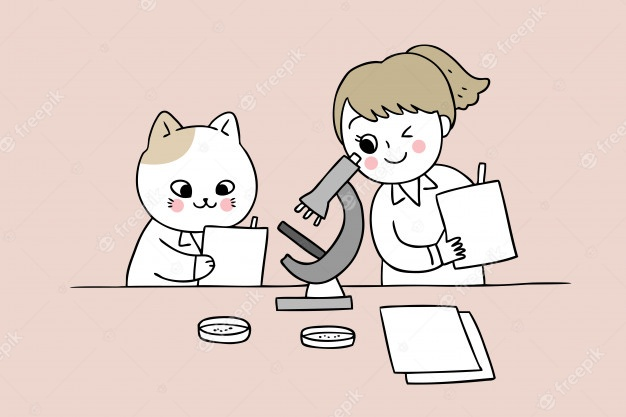

Course overview¶
Hi! I’m your instructor!¶
Office Hours: By appointment
E-mail: kiai@psych.uni-frankfurt.de
Feel free to contact me by email, however the main form of communication for project-related matters in this class will be Slack. This is in part because Slack allows for better tracking of conversation history, particularly when mutliple people and multiple issues are being discussed.
{kind=link}
Let’s get started!
Overview¶
This course will be held weekly, and includes a mix of traditional lectures, interactive demonstrations, tutorials, journal clubs, discussion, and “Project Workshops” where you’ll have time to work together with your group (“pod”) on your project as well as ask me questions. Outside of class, you will be expected to meet with your pods to implement your experiment, collect data, and complete your analysis and summary reports.
As the term goes on, we will spend less time on lectures and more time addressing particular questions/issues/tasks you have to deal with in carrying out and analyzing your results. We may choose not to meet in person on some weeks, or to meet only for part of class time. Depending on common preference, groups can arrange to meet with me separately to discuss particular issues, instead of meeting for the whole Projects Workshop slot. Therefore, the schedule for weeks to come is to be taken merely as a guideline unless otherwise stated.
Regulations & Requirements
This class is listed as Modul PsyBSc10: Empirisch-experimentelles Praktikum (Pflichtmodul) and is worth 8 CP. You must have passed PsyBSc1, PsyBSc2 & PsyBSc7 to take part in this course, as per the Goethe Uni Studienordnung for the Bachelor in Psychology. We unfortunately cannot make any exceptions.
When¶
Every Thursday from Oct. 21, 2021 until February 10th, 2022 at 14:00 - 18:00.
Please note that winter break this term is December 18th, 2021 - January 13th, 2022 and no classes will take place within this time period.
COVID¶
Class: The university has announced that teaching this term should be done in person under the 3G Rules. This means that in order to attend class, you must show proof of vaccination, recovery from COVID (only once), or a negative antigen test (for each class). Please get in touch with me if you have any questions or concerns about this. We may choose to hold some classes on Zoom throughout the semester, however the format will be largely in-person unless COVID regulations change.
Projects: Experiments with human participants will be done online, while experiments with animal participants will be done in person, unless otherwise noted.
Deadlines: Until we/your hear otherwise, the deadlines are the deadlines. :)
Getting Set Up¶
In this class, we will rely heavily on software designed for statistics and data science, such as R and some Python. We will use only open source and free software. To get you set up for this course, check out this comprehensive installation instruction from a fellow EXPRA instructor, Peer Herholz. This will guide you through the installation process, covering several OS: Windows, Mac and Linux.
Course Materials¶
Readings assigned for class (see Syllabus)
Journal articles for journal clubs/your projects (tbd)
Highly Recommended:
The Sense of Style by Steven Pinker
Assignments¶
You will be expected to:
Read articles/materials for your project/that are assigned for class (individually)
Present a research article (journal club) related to your project (individually)
Submit a 10-page demo report in APA format (in pods), due by Dec. 3rd
Prepare a scientific poster showcasing the results of your experiment (in pods)
However, your grade will be based on the final project report: 15 pages in APA format (individually), due by Feb. 24th, 2022
Coding Troubleshooting¶
In this class, you may find yourself having to do analyses and using data wrangling methods you’ve never used before. This process can at times be quite frustrating. My job is to help you through challenges like this, so you should feel free to ask me for help when you’re stuck. However, the goal of this class is also to help you become a but more independent in finding solutions to experimental issues on your own. Therefore, I ask that you follow this troubleshooting guideline first, and if your problem persists, I’ll be happy to help:
Write down (in plain language or using a diagram) the problem you are trying to solve. If applicable, make a diagram on paper of how the loop/routine/chunk of code should work.
Search Google using a simplified phrasing of your problem, and look particularly for results from programming help forums like RStudio Community (for R-related issues), Stack Overflow (for programming), Cross Validated (for stats).
Try a few things out and keep a record (preferably in your .RMarkdown file) of what you tried and what results it gave.
If at this point, or after about 30 minutes of trying, you can’t find the solution, write me on Slack.
Language¶
As you have probably guessed, this class will be held in English. This means that EXPRA reports should also be written in English. If you feel absolutely unable to do so, you may submit in German.
Acknowledgements¶
Some of the materials and resources for this course were borrowed from another EXPRA tutor, Peer Herholz.